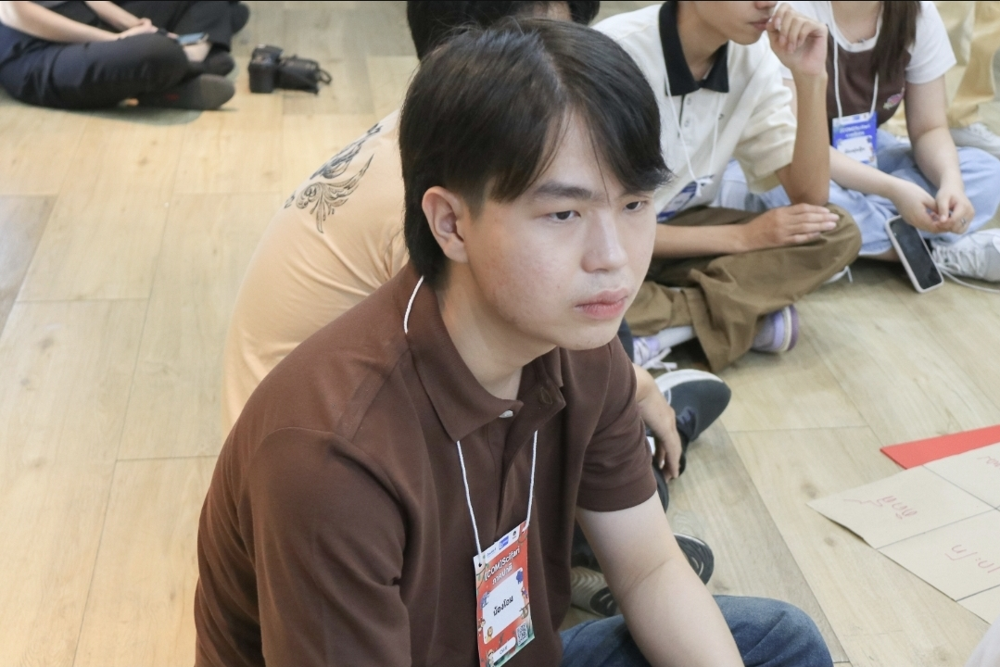

About Me

Hello! My name is Tanawat Wongkom.
I am a Computer Science student at Thammasat University.
Student ID: 6909617711
Program: CIS
In my free time, I enjoy playing games and watching movies. My favorite foods are Som Tam and noodles.
How I Built It
This website was developed from classroom learning. The method involved brainstorming text for each topic, inserting it, and styling it with CSS. The tool that aided in the learning process was Gemini.
Reflection
Problems
- English language,fix it using a translation app.
- Some attributes that were forgotten during the learning process can be corrected by using AI for review.
Results
- I reviewed what I learned in the classroom.
- More practical experience
Next Steps
- Make the structure more beautiful and aesthetically pleasing.
- Change the colors and fonts to create a more harmonious and unique look.
Want to Know More About My University?
Visit the Thammasat University website